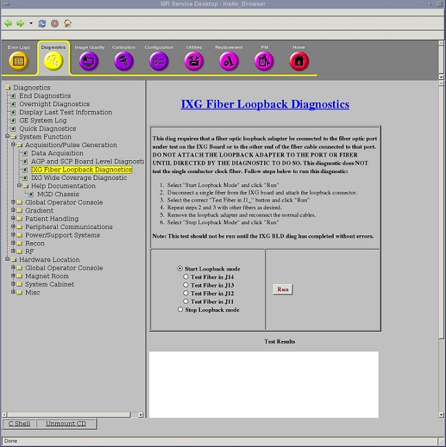

IXG Fiber Loopback Diagnostic
1 Disclaimer
Depending on your service agreement, not all service tools, diagnostics, and utilities referenced in this document may be accessible. Contact your sales person for information on available service license packages.
2 Diagnostic Description
2.1 Diagnostic Path
Diagnostics > System Function > RF > IXG Fiber Loopback Diagnostic
Diagnostics > Hardware Location > System Cabinet > RF > IXG Fiber Loopback Diagnostic
Figure 1. IXG Fiber Loopback Diagnostic

2.2 Purpose
The IXG Fiber Loopback Diagnostic can be used to test the dual fiber connectors of the IXG board and the external dual fiber cables that connect the IXG to the RRX, Exciter, and Gradient Driver(GP4). This diagnostic requires you to manually install a fiber loopback adapter on one of the IXG fiber jacks, or install a fiber loopback adapter and duplex sleeve at the far end of the RRX, Exciter, or Gradient Driver(GP4) fibers. After the fiber loopback adapter is in place, the diagnostic will instruct the system to test that single connection. Data is sent from the IXG and is verified as arriving back at the IXG intact. This diagnostic cannot be used to test the fiber links between the RRX and the ICN.
2.3 Components Tested
Lower four IXG fiber ports
2.4 Requirements
-
Do not run this test until IXG Board Level Diagnostic has completed without errors.
-
DVMR link fiber loopback adapter, 5306530 (part of DVMR Service Cable Hardware Kit, 5306523)
2.5 Test Sequence
-
Select Start Loopback mode.
-
Click Run.
-
Manually disconnect a single fiber from the IXG board and attach the fiber loopback adapter.
-
Select the correct Test Fiber in J1_ button.
note:Only the lower four fibers are tested.
-
Click Run.
-
Ensure that the diagnostic passes by reviewing the status in the Test Results table.
-
Manually disconnect the next single fiber from the IXG board, attach the fiber loopback adapter, and select the correct Test Fiber in J1_ button. Repeat with the other fibers as desired.
-
Remove the fiber loopback adapter and reconnect the normal cables.
-
Select Stop Loopback mode.
-
Click Run.
2.6 Expected Results
- Test Results
-
Diagnostic results display the test/component name with a status of PASS or FAIL. If you receive a FAIL status, click GE System Log to view the error message. The system log records errors with date, time, and name of test process along with a detailed error message.
- Test Status
-
This window informs you of the progress of the test from the initial scan to the completed diagnostic.
If the diagnostic reports a timeout, the diagnostic may not have been executed. Retry the test. If it continues to time out, complete a TPS reset and then retry the test.
2.7 Finalization
Before scanning, perform a TPS reset.